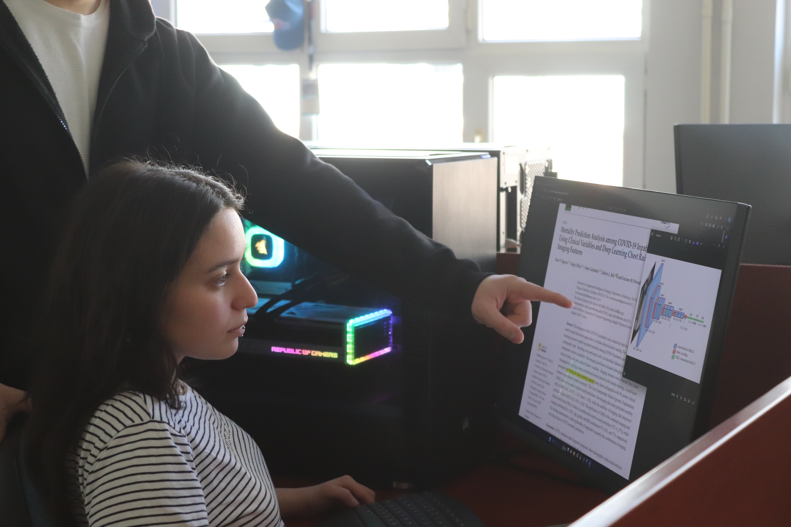

AI in Healthcare Lab
AI in Healthcare Lab
Lab Student
Sep 2023 – Jun 2024
The thesis project was developed here.
Theoretical and practical experience was gained in machine learning and image analysis.